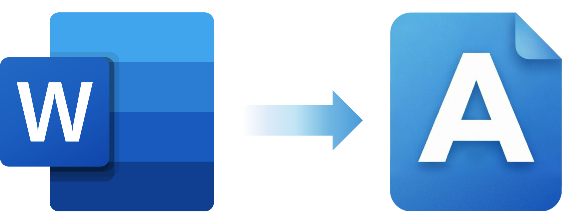
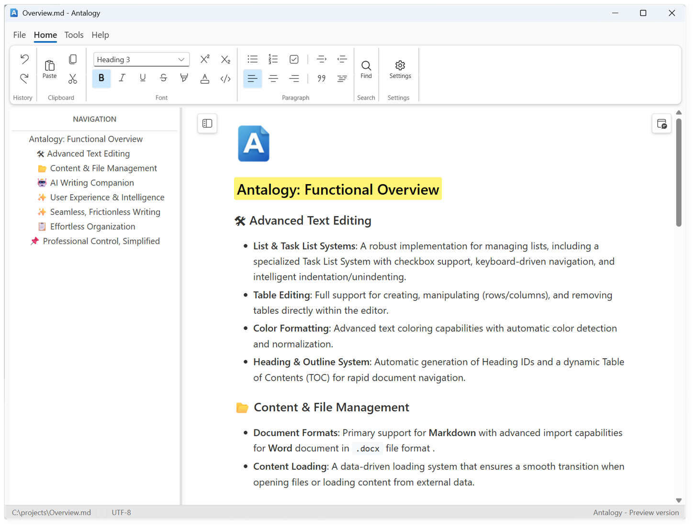
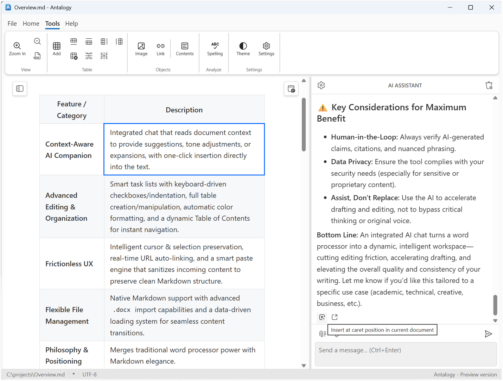
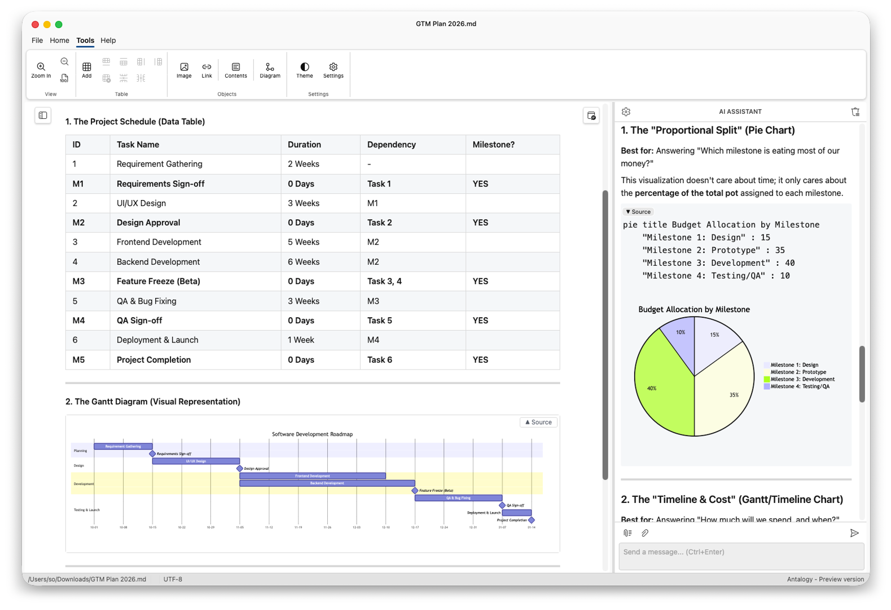

The power of Word.
The freedom of Markdown.
Antalogy is an AI-ready desktop word processor — the familiarity of a Word interface for Markdown, the privacy of local-first, and the LLM of your choice.
Antalogy is an AI-ready desktop word processor — the familiarity of a Word interface for Markdown, the privacy of local-first, and the LLM of your choice.




Brainstorm, edit, summarize or audit documents — without leaving your workflow.
One-click, two-way synchronization between the document — or just the selected text — and the LLM chat.
Use a local or remote LLM endpoint of your choice at any time — and switch whenever you like.
Compatible with any LLM that supports the OpenAI API — local, on-prem or cloud.
Antalogy’s integrated AI Assistant chat lets you brainstorm, edit, summarize, or audit documents without leaving your workflow. Unlike locked-in cloud AI suites, you decide where the model runs:
Antalogy supports any LLM with an OpenAI-compatible API. You can switch endpoints per document, per LLM chat, or per compliance tier. The AI Assistant adapts to your security posture without changing your workflow.
While .docx is engineered for print rendering, Markdown is engineered for data exchange. Its hierarchical, plain-text structure aligns perfectly with how LLMs parse, reason, and generate text.
Switching from DOCX to Markdown cuts token waste by 31–35%, making every token count and stretching your AI budget further across documents of all sizes*:
| Document size (w/o images) | Markdown tokens (lean) | DOCX tokens (est. noise) | Token waste (overhead) | Efficiency gain |
|---|---|---|---|---|
| Small (~500 words) | ~650 | ~950 | +300 tokens | ~31% |
| Medium (~2,500 words) | ~3,300 | ~5,000 | +1,700 tokens | ~34% |
| Large (~10,000 words) | ~13,000 | ~20,000 | +7,000 tokens | ~35% |
*Based on typical business documents containing headers, lists, tables, and standard formatting.
The context window is the AI’s working memory. Every token spent on XML scaffolding or hidden styling is a token stolen from your actual content.
“Image bloat” occurs when you upload a .docx file containing images directly into a Large Language Model (LLM). It wastes massive amounts of your token window and drastically increases API costs, while often degrading model performance. Because LLMs process visual information by converting images into large mathematical matrices (or high-token sequences), a single hidden or unoptimized image can consume more tokens than the entire text of a long document.
Available on Windows and macOS.
Zero telemetry. No document format lock-in.